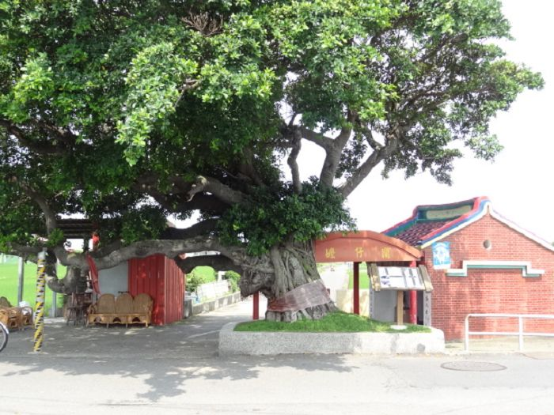
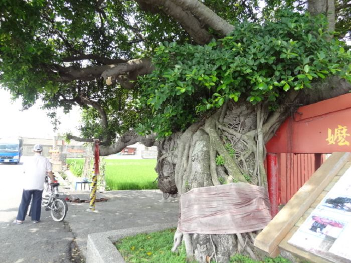

間仔嬤(萬善堂)
我們今天來到了三庄交界處—間仔嬤
三庄？!哪三庄呢?!
沒錯!三庄就是—和美鎮的好修里、線西鄉的德興村、
伸港鄉的泉州村
 |
間仔嬤原先只是埋葬屍骨的小土葛屋,也就是民間常見的萬善
堂,而些屍骨藏著一樁地方清領時期,謀財害命的傳說。至於萬善堂為何會變成間仔嬤？聽說是因為萬善堂前面有一個管制水路的閘門,舊稱「間仔」,又因為水路
對農夫很重要,就如同大地之母一樣看護著百姓,也因為稱呼習慣,所以有了間仔嬤的稱號。 |
這棵老樹生長至今已有百餘年，粗壯的樹幹及茂盛的枝葉都顯得生機盎然，有時還會看到成群紅色蜻蜓在這兒飛呢！看起來超級壯觀ㄛ！
百年老樹→ |
 |
‧曾在民國94年(農曆十二月初一)重修
<--回德興村首頁
|
|